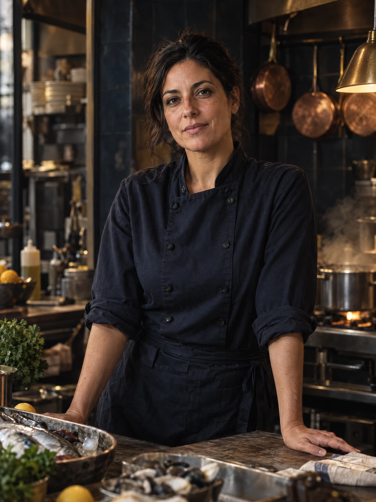

02 / THE STORYA DIFFERENT KIND OF CURRENT

INÊS VALENTE · CHEF & FOUNDERTHE HAND BEHIND THE TIDE
A kitchen that
listens to the sea.
Chef Inês Valente grew up between Setúbal's fish markets and long family lunches that never ended when the plates were cleared. At Ondine, she brings that same generous spirit to the table.
Her cooking is guided by the day’s catch, the seasons, and a simple belief: when an ingredient is this good, the kindest thing is to let it speak.
“The sea gives us the beginning. The evening is what we make of it.”Inês Valente